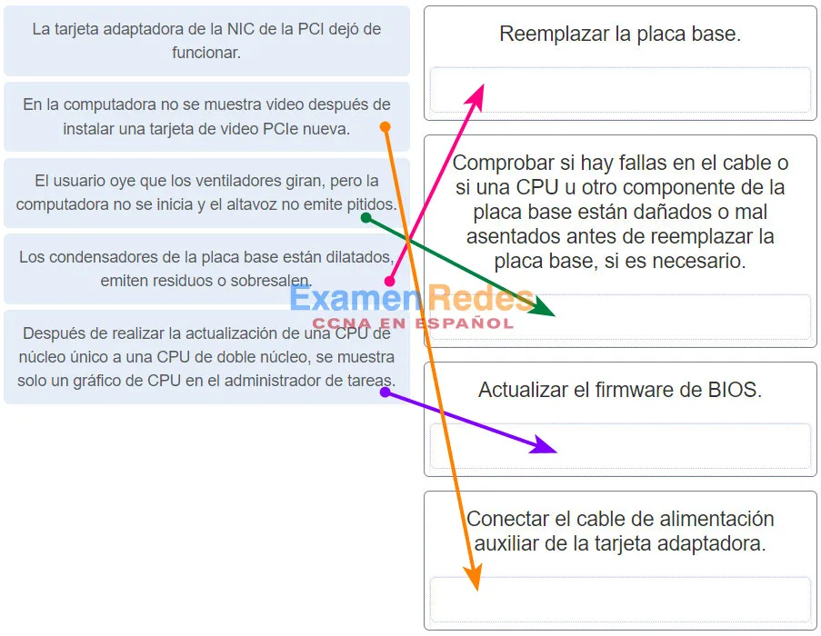
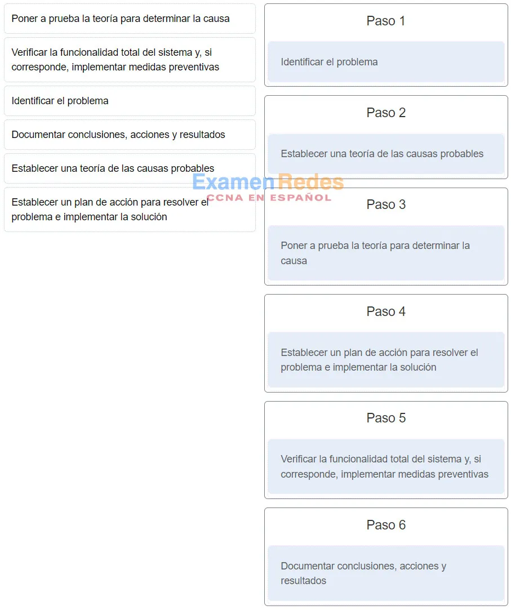
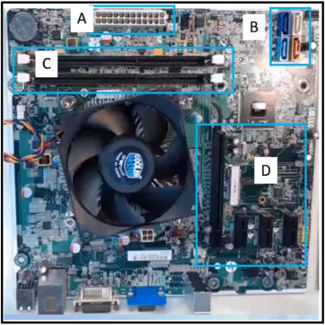

1. Se informa el siguiente problema de la impresora: “La impresora imprime caracteres desconocidos”. ¿Cuáles de las siguientes son dos posibles causas de este problema? (Elija dos opciones).
La bandeja para papel es endeble.2. Un técnico está actualizando muchas PC utilizadas dentro de la compañía. ¿Cómo debe desechar el técnico una placa madre antigua?
Reciclarla de acuerdo con las regulaciones locales3. Se ha llamado a un técnico para investigar un problema con una computadora que se reinicia aleatoriamente a lo largo del día. ¿Qué dos componentes del hardware podrían causar este problema? (Elija dos opciones).
Protector de sobrecargas4. ¿Qué estado de energía de la ACPI hace referencia a una situación en la cual la CPU está apagada, pero la RAM se actualiza?
S45. Un técnico acaba de finalizar un mantenimiento preventivo en la impresora del departamento. Los usuarios ahora informan que la impresora ya no está disponible. ¿Qué debe hacer el técnico para resolver este problema?
Instalar un hub USB6. ¿Cuáles son los tres componentes que se suelen encontrar en los kits de mantenimiento de impresoras láser? (Elija tres opciones).
Rodillos de transferencia7. Una vez que un técnico pone a prueba una teoría sobre causas probables, ¿cuáles son las dos acciones que debe realizar si no logra identificar la causa exacta con la puesta a prueba? (Elija dos opciones).
Verificar la funcionalidad total del sistema.8. Un usuario elige la opción “collate” (intercalar) e imprime dos copias de un documento de tres páginas. ¿Cuál es el orden en el que se imprimen las páginas?
Páginas 1, 1, 2, 2, 3, 39. ¿Qué tipo de red abarca un único edificio o campus y proporciona servicios y aplicaciones a las personas dentro de una estructura organizativa común?
WAN10. Una el problema con la posible solución. (No se utilizan todas las opciones).
11. ¿Cómo ayuda la virtualización en la recuperación tras un desastre dentro de un centro de datos?
Se acelera el aprovisionamiento de servidores.12. ¿Qué servicio de computación en la nube es el más adecuado para una organización que necesita crear aplicaciones en colaboración y enviarlas por la web?
IaaS13. ¿En qué dos situaciones se prefiere el protocolo de transporte UDP en lugar del TCP? Elija dos opciones.
Cuando las aplicaciones requieren la garantía de que un paquete llegue intacto, en secuencia y sin duplicado14. Se le ha pedido a un técnico que configure las llamadas de Wi-Fi en un dispositivo móvil corporativo. ¿En qué situación esta función sería la más ventajosa?
En una situación de emergencia, cuando no quedan minutos en el teléfono15. Un centro de datos actualizó recientemente un servidor físico para alojar varios sistemas operativos en una única CPU. El centro de datos ahora puede proporcionarle a cada cliente un servidor Web separado sin tener que asignar un servidor independiente real para cada cliente. ¿Cuál es la tendencia de red que implementa el centro de datos en esta situación?
Colaboración en línea16. La configuración IP actual de una compañía pequeña se realiza de forma manual y lleva mucho tiempo. Debido al aumento en el crecimiento de la red, el técnico necesita una manera más simple de configurar el IP en las estaciones de trabajo. ¿Qué servicio simplificaría la tarea de configuración del IP en las estaciones de trabajo?
ICMP17. Un técnico está solucionando problemas de un servidor que muestra el mensaje de error “No se encontró una RAID” después de una interrupción de energía durante el fin de semana. ¿Cuál de las siguientes es una posible causa?
Se debe actualizar el firmware de BIOS.18. ¿Qué puede hacer un usuario para evitar que aplicaciones específicas accedan a un equipo Windows a través de una red?
Habilitar el filtrado de direcciones MAC.19. Cuándo se arma una computadora, ¿qué componente está conectado a la placa madre con un cable SATA?
La unidad óptica20. ¿Qué factor ambiental negativo se reduce con la limpieza del interior de una computadora?
ESD21. ¿Cuál es la finalidad de una hoja de datos de seguridad?
Especificar los procedimientos en el diseño y armado de sistemas informáticos comunes.22. ¿Cuál de las siguientes es una característica de la DDR SDRAM?
Transfiere datos dos veces por ciclo de reloj, a diferencia de la SDRAM, que lo hace una vez por ciclo de reloj.23. ¿Qué dos hipervisores son adecuados para admitir máquinas virtuales en un centro de datos? (Elija dos opciones.)
Microsoft Hyper-V 201224. En la planta de producción, una fábrica de muebles tiene computadoras portátiles para la supervisión e informe de los procesos. La temperatura del entorno de la planta de producción es de alrededor de 80 ºF (27 ºC). El nivel de humedad es bastante más alto que 70%. Los ventiladores están montados en el techo para permitir la circulación de aire. El polvo de madera es frecuente. ¿Cuál es la condición que más probabilidades tiene de afectar negativamente a las computadoras portátiles que se utilizan en esas condiciones?
El polvo25. Un diseñador web accede a una computadora con Windows 10 de la compañía de manera remota. El diseñador a menudo necesita abrir simultáneamente varias aplicaciones, como un editor de páginas web y un editor de gráficos. En lugar de abrirlos en varias ventanas, el diseñador los abre en diferentes escritorios virtuales. ¿Qué tecnología utiliza el diseñador?
Realidad virtual26. Un cliente le solicitó que una computadora se cree de forma que admitirá eSATA. ¿Qué componente se debe verificar para asegurarse de que esta característica sea admitida?
unidad de disco duro 27. Coloque las seis etapas del
proceso de solución de problemas en el orden correcto.

28. Una empresa está buscando un firewall de última generación que proporcione funciones de VPN, funciones de IDS/IPS y protección contra DoS/DDoS. ¿Qué dispositivo sería el más adecuado para esta tarea?
TPM29. ¿Cuáles son los tres valores que deben agregarse a las propiedades IPv4 de una NIC para que una computadora tenga conectividad básica con la red? (Elija tres opciones).
Nombre de dominio30. La dirección IPv6 de un dispositivo es 2001:0DB8:75a3:0214:0607:1234:aa10:ba01 /64. ¿Cuál es el identificador de host del dispositivo?
ba0131. ¿Cuál de estas afirmaciones describe una característica de la SDRAM?
Requiere energía constante para funcionar.32. ¿Cuáles son dos riesgos de seguridad asociados al uso compartido de impresoras en un entorno corporativo? (Elija dos opciones).
Hurgar en la basura33. ¿Qué estándar proporciona un puente entre el hardware de la computadora portátil y el sistema operativo y, a su vez, representa el modo en que los técnicos configuran los esquemas de administración de energía para obtener el mejor rendimiento?
PCIe34. ¿Cuál es el propósito de los adaptadores RAID?
Conectar varios dispositivos de almacenamiento para lograr redundancia o velocidad.35. Un técnico le explica a un cliente las diferencias entre las impresoras de inyección de tinta y las impresoras láser. ¿Cuáles son las dos comparaciones que debe hacer el técnico? (Elija dos opciones).
Tanto las impresoras láser como las de inyección de tinta imprimen imágenes de baja calidad.36. Una impresora láser en color se utiliza para imprimir documentos con gráficos y fotografías. Los usuarios se quejan de que la impresión lleva demasiado tiempo. ¿Qué componente de la impresora debe actualizarse para mejorar el rendimiento de la impresión?
RAM37. ¿Qué dos componentes de la placa madre controlan el funcionamiento de inicio del sistema? (Elija dos opciones).
Chip BIOS38. Un técnico está mejorando una motherboard ATX con otra motherboard ATX. ¿Qué componente puede verse afectado por esta acción y requerirá una actualización que implica una compra por separado?
BIOS39. ¿Cuáles son dos riesgos de seguridad al lidiar con impresoras láser? (Elija dos opciones).
alto voltaje40. Un cliente trae una computadora portátil con una pantalla táctil que no funciona correctamente. La pantalla táctil no responde en absoluto o proporciona respuestas inusuales o imprecisas. ¿Cuál de las siguientes es una posible causa de este comportamiento?
El conector de CC no está conectado o está suelto.41. ¿Qué servicio está disponible para que Windows proporcione servicios de software para servidores de impresión a clientes de MAC OS?
AirPort Extreme de Apple42. Un estudiante ayuda a un amigo con una PC doméstica con la que ya no puede acceder a Internet. Después de investigar, el estudiante descubre que a la PC se le asignó la dirección IP 169.254.100.88. ¿Qué puede provocar que una PC obtenga una dirección IP de esa clase?
Interferencia de dispositivos cercanos43. ¿Qué módulo de memoria se utilizaba para almacenar las instrucciones de arranque de la PC y de carga del OS, y se sigue utilizando en adaptadores aun cuando el contenido de la memoria no se puede modificar?
Memoria principal44. ¿Cuál es el formato comprimido de la dirección IPv6 2002:0042:0010:c400:0000:0000:0000:0909?
200:420:110:c4b::910:0:9045. Un técnico informático está instalando un RAID. Si el RAID utiliza la fragmentación con paridad doble, ¿qué nivel de RAID utiliza el técnico?
1046. Un servidor recibe un paquete del cliente. El paquete tiene el número de puerto de destino 137. ¿Qué aplicación de servicio solicita el cliente?
SLP47. Un técnico está trabajando en una computadora portátil y el GPS no funciona. ¿Cuál es una causa probable de esta situación?
La frecuencia de actualización de la pantalla es demasiado baja.48. ¿En qué situación una descarga electrostática podría dañar la PC?
Cuando se reemplaza un disco duro mecánico por una SSD M.249. Una computadora tiene una SSD para el sistema operativo y las aplicaciones, y otro disco duro mecánico para el almacenamiento de datos. El usuario informa que los datos ya no pueden guardarse en el disco duro mecánico. ¿Qué debe hacer el técnico para ver si la unidad es reconocida por el sistema operativo?
Utilizar el administrador de dispositivos50. Un profesor informa el siguiente problema de la impresora: «El papel queda arrugado después de la impresión». ¿Cuáles de las siguientes son dos posibles causas de este problema? (Elija dos opciones).
El papel podría no estar correctamente cargado.51. Un servidor recibe un paquete del cliente. El paquete tiene el número de puerto de destino 23. ¿Qué aplicación de servicio solicita el cliente?
SLP52. Un servidor recibe un paquete del cliente. El paquete tiene el número de puerto de destino 22. ¿Qué aplicación de servicio solicita el cliente?
SSH53. Un servidor recibe un paquete del cliente. El paquete tiene el número de puerto de destino 143. ¿Qué aplicación de servicio solicita el cliente?
IMAP54. Un servidor recibe un paquete del cliente. El paquete tiene el número de puerto de destino 161. ¿Qué aplicación de servicio solicita el cliente?
SNMP55. Un servidor recibe un paquete del cliente. El paquete tiene el número de puerto de destino 389. ¿Qué aplicación de servicio solicita el cliente?
LDAP56. Un servidor recibe un paquete del cliente. El paquete tiene el número de puerto de destino 25. ¿Qué aplicación de servicio solicita el cliente?
SMTP57. Un servidor recibe un paquete del cliente. El paquete tiene el número de puerto de destino 427. ¿Qué aplicación de servicio solicita el cliente?
SLP58. Un servidor recibe un paquete del cliente. El paquete tiene el número de puerto de destino 53. ¿Qué aplicación de servicio solicita el cliente?
DNS59. Después de ser utilizada durante toda la mañana, una computadora se reinicia repentinamente sin la intervención del usuario. ¿Qué dos partes del hardware es más probable que causen este problema? (Elija dos opciones).
BIOS60. Un técnico está a punto de comenzar el mantenimiento preventivo en una PC de la compañía. ¿En qué situación una descarga electrostática sería un problema?
Cuando se trabaja en un entorno corporativo donde hay alfombras instaladas debajo de las computadoras verticales61. ¿Qué procedimiento se recomienda seguir al limpiar los componentes de una PC?
Utilizar limpiavidrios en pantallas de LCD.62. Un usuario desea sincronizar algunas aplicaciones, películas, música y libros electrónicos entre dispositivos móviles. ¿Cuáles son los dos tipos de conexiones que se usan para sincronizar este tipo de datos? Elija dos opciones.
Datos móviles63. ¿Cuál de estas afirmaciones sobre las computadoras portátiles es verdadera?
Las motherboards de computadoras portátiles tienen factores de forma estándar.64. Cuando se instala una placa madre nueva, ¿entre qué dos componentes se debe aplicar la pasta térmica? (Elija dos opciones).
Disipador térmico65. Un técnico está instalando una nueva HDD. ¿A qué conector de la placa madre conectará el técnico el cable de datos?
SATA66. ¿Qué componente del proceso de administración de cambios se ocupa de los procesos de negocios que se ven afectados por los cambios?
Identificación67. ¿Cuáles son las tres características que pueden configurarse en el BIOS para aportar seguridad a una PC? (Elija tres opciones).
Encriptación de unidades68. Observe la ilustración. Se le ha pedido a un técnico que instale una tarjeta de video. ¿Qué sección de la placa madre utilizará el técnico para instalar la tarjeta?
69. ¿Qué componente requiere que un técnico instale los tornillos de manera externa a través del gabinete de la computadora?
Placa base70. ¿Qué dos componentes de la computadora portátil pueden ser reemplazados por el cliente? (Elija dos opciones).
Módulo mini-PCIe71. ¿Cuáles son dos tipos de conexiones de Internet de alta velocidad cableadas? (Elija dos opciones).
Red celular72. Un técnico trabaja en la resolución de problemas en una PC que presenta una falla de hardware detectada por el BIOS. ¿Cuál de las siguientes es una de las formas en que se indica esta falla?
La PC arranca automáticamente en Modo seguro, y se muestra una advertencia en la pantalla.73. Una persona informa que al intentar imprimir varias fotografías de alta resolución, la impresora láser color es extremadamente lenta. ¿Qué debe hacer el técnico para resolver este problema?
Rebobinar la cinta74. Una computadora portátil tiene una unidad de NVMe (C:) y un disco duro mecánico (D:). Cuando el usuario intenta guardar una hoja de cálculo en la unidad D:, advierte que la unidad D: no está allí. ¿Qué debe hacer el técnico para ver si la unidad es reconocida por el sistema operativo?
Utilizar el panel de control de administración de discos_2. Una persona ha comenzado un nuevo trabajo técnico. ¿En qué situación la ESD sería un problema?
al instalar un procesador_3. Un técnico está a punto de comenzar el mantenimiento preventivo en una computadora de la empresa. ¿En qué situación la ESD sería un problema?
al caminar por un área alfombrada y luego tocar un teclado que está conectado a una torre de PC_Caso 2:
al reemplazar una placa base_Caso 3:
al instalar RAM_24. ¿Qué pasaría si una PC que contiene una fuente de alimentación que no se ajusta automáticamente al voltaje de entrada se configura en 230 voltios y se conecta a un tomacorriente en los Estados Unidos?
La fuente de alimentación explotaría._45. Un técnico está instalando una nueva impresora en un ambiente fresco y húmedo. Después de realizar el cableado de la impresora y de instalar el software y el controlador de impresión, la página de prueba de la impresora se atasca. ¿Cuál es la causa más probable del error de impresión?
controlador de impresora incorrecto_52. Haga coincidir el tipo de memoria con la función. (No se utilizan todas las opciones).
_58. Un técnico informático está instalando un RAID. Si el RAID usa duplicación y creación de bandas, ¿qué nivel de RAID está usando el técnico?
10_59. Un técnico informático está instalando un RAID. Si el RAID usa duplicación, ¿qué nivel de RAID está usando el técnico?
1_61. Un técnico informático está instalando un RAID. Si el RAID usa bandas, ¿qué nivel de RAID está usando el técnico?
0_62. Un técnico informático está instalando un RAID. Si el RAID usa creación de bandas con paridad doble, ¿qué nivel de RAID está usando el técnico?
6_63. Un técnico está actualizando muchas PC utilizadas dentro de la empresa. ¿Cómo debe desechar el técnico una batería vieja?
Recicle siguiendo las normas locales._64. Un técnico está actualizando muchas PC utilizadas dentro de la empresa. ¿Cómo debe desechar el técnico un monitor roto?
Recicle siguiendo las normas locales._66. Un técnico está actualizando muchas PC utilizadas dentro de la empresa. ¿Cómo debe desechar el técnico la memoria RAM antigua?
Recicle siguiendo las normas locales._67. Un técnico está actualizando muchas PC utilizadas dentro de la empresa. ¿Cómo debe desechar el técnico una placa base antigua?
Recicle siguiendo las normas locales._68. Un técnico está actualizando muchas PC utilizadas dentro de la empresa. ¿Cómo debe desechar el técnico un disco duro antiguo?
Recicle siguiendo las normas locales._69. Después de un uso continuo por la mañana, una computadora se reinicia repentinamente sin la intervención del usuario. ¿Cuáles son las dos partes de hardware más probables que podrían causar este problema? (Elija dos.)
CPU_82. ¿Cuál es el formato comprimido de la dirección IPv6 2001:0db8:0000:0000:0000:a0b0:0008:0001?
2001:db8::a0b0:8:1_83. ¿Cuál es el formato comprimido de la dirección IPv6 fe80:09ea:0000:2200:0000:0000:0fe0:0290?
fe80:9ea:0:2200::fe0:290_85. ¿Cuál es el formato comprimido de la dirección IPv6 2002:0420:00c4:1008:0025:0190:0000:0990?
2002:420:c4:1008:25:190::990_86. ¿Cuál es el formato comprimido de la dirección IPv6 2001:0db8:0000:0000:0ab8:0001:0000:1000?
2001:db8::ab8:1:0:1000_87. ¿Cuál es el formato comprimido de la dirección IPv6 fe80:0000:0000:0000:0220:0b3f:f0e0:0029?
fe80::220:b3f:f0e0:29_88. ¿Cuál es el formato comprimido de la dirección IPv6 fe80:9ea0:0000:2020:0000:00bf:00e0:9290?
fe80:9ea0::2020:0:bf:e0:9290_89. ¿Qué estado de energía ACPI describe cuando la CPU y la RAM están apagadas y el contenido de la RAM se ha guardado en un archivo temporal en el disco duro?
S4_90. ¿Qué estado de energía ACPI describe cuando la CPU y la RAM aún reciben energía pero los dispositivos que no se usan están apagados?
S1_92. Qué estado de energía ACPI describe cuando la computadora está apagada?
S5_93. ¿Qué estado de energía ACPI describe cuando la CPU está apagada y la RAM está configurada en una frecuencia de actualización lenta, a menudo llamada modo de suspensión?
S3_94. ¿Qué estado de energía ACPI describe cuando la computadora está encendida y la CPU está funcionando?
S0_96. Se acaba de instalar una nueva impresora en lo profundo de una mina. Cuando se imprimen páginas de prueba, el papel se atasca constantemente. ¿Qué debe hacer el técnico para resolver el problema?
Mueva la impresora a un lugar menos húmedo._97. Un usuario se queja de que recientemente todos los documentos impresos tienen líneas verticales y rayas en el papel. ¿Qué debe hacer el técnico para resolver el problema?
Distribuya el tóner de manera más uniforme dentro del cartucho._98. Una escuela está instalando una nueva impresora compartida, pero la impresora no aparece en la lista de impresoras disponibles. ¿Qué debe hacer el técnico para resolver el problema?
Agregue manualmente la dirección IP de la impresora._99. Los empleados se quejan de que envían trabajos de impresión a una impresora recién instalada, pero los trabajos de impresión nunca se imprimen. ¿Qué debe hacer el técnico para resolver el problema?
La impresora está conectada al puerto incorrecto. Modifique el puerto._100. Los usuarios han notado que los colores en sus documentos impresos son diferentes de los colores que ven en las pantallas de sus computadoras. ¿Qué debe hacer el técnico para resolver el problema?
Calibre la impresora._102. Los empleados de una pequeña empresa se quejan de que la impresora está imprimiendo imágenes descoloridas. ¿Qué debe hacer el técnico para resolver el problema?
Reemplace el cartucho de tóner._103. Un fotógrafo se queja del siguiente problema de la impresora: La impresora emite el mensaje “No se pudo imprimir el documento”. ¿Cuáles son las dos posibles causas de este problema? (Elija dos.)
Un cable está suelto o desconectado._105. Un gerente se queja del siguiente problema de la impresora: La impresora is imprimir colores incorrectos. ¿Cuáles son las dos posibles causas de este problema? (Elija dos.)
Es posible que sea necesario limpiar y calibrar los cabezales de impresión._106. Un técnico se queja del siguiente problema de la impresora: La impresión aparece descolorida en el papel. ¿Cuáles son las dos posibles causas de este problema? (Elija dos.)
El cartucho de tóner está bajo._107. Un bibliotecario se queja del siguiente problema de la impresora: El panel de control de la impresora no muestra ninguna imagen. ¿Cuáles son las dos posibles causas de este problema? (Elija dos.)
Es posible que el contraste de la pantalla esté demasiado bajo._109. Una recepcionista se queja del siguiente problema con la impresora: Mi impresora de impacto produce caracteres descoloridos o claros. ¿Cuáles son las dos posibles causas de este problema? (Elija dos.)
La cinta puede estar gastada._110. Un fotógrafo se queja del siguiente problema de la impresora: El papel no se introduce en la impresora. ¿Cuáles son las dos posibles causas de este problema? (Elija dos.)
El papel puede estar arrugado._113. Un usuario informa que una unidad ya no está allí. El técnico le pide al usuario que demuestre el problema. Dentro de la aplicación, el usuario demuestra que la unidad, que estaba presente en las opciones de guardar ayer, ya no es una opción. ¿Qué debe hacer el técnico para ver si el sistema operativo reconoce la unidad?
Utilice el Administrador de dispositivos._114. Una computadora tiene un SSD para el sistema operativo y las aplicaciones y usa otro disco duro mecánico para el almacenamiento de datos. El usuario informa que los datos ya no se pueden guardar en el disco duro mecánico. ¿Qué debe hacer la técnica?ian hacer para ver si el sistema operativo reconoce la unidad?
Utilice el Explorador de archivos.Caso 2:
Abra un navegador web y escriba lo siguiente: http://127.0.0.1. Verifique si ambas unidades aparecen en la lista._116. Un técnico está trabajando en una computadora portátil y una aplicación no se carga. ¿Cuál es una causa probable de esta situación?
Se debe reiniciar una aplicación._117. Un técnico está trabajando en una computadora portátil y una aplicación no responde. ¿Cuál es una causa probable de esta situación?
Es necesario reiniciar una aplicación._118. Un técnico está trabajando en una computadora portátil y aparece un mensaje de error sobre el descifrado al abrir un correo electrónico. ¿Cuál es una causa probable de esta situación?
Falta un certificado digital._119. Los estudiantes que usan la misma impresora se quejan de que los documentos impresos recientemente contienen caracteres desconocidos. ¿Qué debe hacer el técnico para resolver el problema?
Vuelva a instalar el controlador de la impresora._120. Un asistente de oficina en un bufete de abogados está tratando de imprimir muchos documentos legales grandes pero tiene una “sobrecarga de memoria” mensajes de error de la impresora. ¿Qué debe hacer el técnico para resolver el problema?
Agregue más memoria a la impresora._123. Un usuario se queja de que la impresora está imprimiendo páginas sin imagen. ¿Qué debe hacer el técnico para resolver el problema?
Reemplace el cartucho de tóner.1. Una la definición con el tipo de nube.

2. Un ingeniero de software interviene en el desarrollo de una aplicación. Para las pruebas de
capacidad de uso, el ingeniero necesita asegurarse de que la aplicación funcionará en entornos de
Windows 7 y Windows 8. Las funciones y las características deben verificarse en el entorno real del
sistema operativo. El ingeniero utiliza una estación de trabajo de Windows 7. ¿Qué dos tecnologías
pueden ayudar a ingeniero a superar las pruebas de capacidad de uso? (Elija dos opciones).
Dos discos duros independientes
Virtualización del cliente
Dos CPU independientes
Arranque doble
Redundancia de almacenamiento
3. ¿Cuáles son los dos desafíos empresariales y técnicos que la virtualización en el centro de datos ayuda a las empresas a superar? (Elija dos opciones.)
requisitos de licencia del sistema operativo4. ¿Cuáles de las siguientes son dos ventajas de utilizar la virtualización de computadoras? (Elija dos opciones).
Aumenta el rendimiento del equipo host con la virtualización.5. Una pequeña empresa está considerando mover muchas de las funciones del centro de datos a la
nube. ¿Cuáles son las tres ventajas de este plan? (Elija tres opciones).
No es necesario que la compañía se preocupe sobre cómo gestionar la creciente
demanda de almacenamiento y procesamiento de datos con equipos internos del centro de datos.
La compañía solo debe pagar por la cantidad de procesamiento y capacidad de
almacenamiento que usa.
Los centros de datos de abonado único pueden crecer con facilidad para adaptarse a los requisitos de
aumento del almacenamiento de datos.
Los servicios en la nube permiten que la compañía tenga y administre sus propios servidores y
dispositivos de almacenamiento.
La compañía puede aumentar el procesamiento y la capacidad de almacenamiento
según lo necesita y, luego, disminuir la capacidad cuando ya no la necesiten.
Los servicios en la nube se facturan con un cargo fijo, sin importar la cantidad de procesamiento y
almacenamiento que usa la compañía.
6. En una universidad se utiliza tecnología de virtualización para dictar cursos de seguridad de la información. Algunos de los ejercicios de laboratorio incluyen el estudio de las características de virus y gusanos de computadora. ¿Cuál es la ventaja de realizar los ejercicios de laboratorio en el entorno virtual en comparación con la utilización de PC reales?
El entorno de virtualización posee mejores herramientas para desarrollar soluciones de mitigación.7. ¿Qué tipo de tecnología permite a los usuarios acceder a los datos en cualquier momento y lugar?
Computación en la nube8. Verdadero o falso.
La computación en nube y la virtualización son términos diferentes que
se refieren a lo mismo.
9. ¿Cómo ayuda la virtualización en la recuperación tras un desastre dentro de un centro de datos?
garantía de suministro eléctrico10. ¿Qué tipo de hipervisor se utilizaría con mayor probabilidad en un centro de datos?
Hadoop11. ¿Cuál es la función principal de un hipervisor?
Es un dispositivo que sincroniza un grupo de sensores.12. ¿Cuál de estas afirmaciones describe una característica de la computación en la nube?
Los usuarios individuales o las empresas pueden acceder a las aplicaciones por Internet desde cualquier dispositivo, en cualquier parte del mundo.13. Un técnico necesita usar una aplicación que no es compatible con los sistemas operativos Windows instalados en la computadora. ¿Qué puede hacer el técnico para que se ejecute esta aplicación en la computadora?
Instalar la aplicación en Modo seguro.14. ¿Qué servicio de computación en la nube sería el más adecuado para una organización que carece del conocimiento técnico para alojar y mantener aplicaciones en su sitio local?
ITaaS15. ¿Cuál es la diferencia entre las funciones de la computación en la nube y la virtualización?
La computación en la nube separa la aplicación del hardware, mientras que la virtualización separa el SO del hardware subyacente.16. ¿Cuál es una característica de un hipervisor de tipo 1?
es más adecuado para los consumidores que para un entorno empresarial17. ¿Cuál es una característica de un hipervisor de tipo 2?
no requiere software de consola de administración18. ¿Qué tipo de hipervisor se implementa cuando un usuario con una computadora portátil que ejecuta Mac OS instala una instancia virtual del SO Windows?
Instalado directamente en el hardware19. Una universidad pequeña desea implementar un sistema de gestión de aprendizaje (LMS) y está buscando una solución alojada. ¿Qué tipo de solución basada en la nube ayudaría a la universidad a lograr el objetivo?
Dropbox20. Un redactor independiente desea utilizar un servicio que permita acceder a los archivos en cualquier momento desde cualquier dispositivo. Cada vez que el redactor inicia la computadora portátil y se conecta a internet, los archivos almacenados en la computadora portátil deben sincronizarse con el servicio automáticamente. ¿Qué solución cumplirá con los requisitos?
Office 36521. Una asociación internacional de ingeniería civil tiene miembros de todas partes del mundo. La división de investigación de la asociación planea tener un servicio basado en la nube para compartir las ideas de investigación y promover la colaboración entre los miembros de varias divisiones de la asociación. ¿Qué modelo de nube es adecuado para ellos?
Híbrida22. Mientras un técnico está instalando una impresora, escucha un ruido de chasquido fuerte. ¿Qué dispositivo debe revisar primero el técnico?
Placa madre23. ¿Qué modelo de nube proporciona servicios para una organización o entidad específica?
una nube híbrida24. Una compañía de capacitación ofrece muchos cursos de aplicaciones basados en Windows. La compañía está buscando una solución que le permita ofrecer un entorno cómodo de aprendizaje y práctica a distancia. El objetivo es brindarles un entorno de aprendizaje uniforme a todos los usuarios. ¿Qué solución basada en la nube ayudaría a la compañía a lograr el objetivo?
Google Drive25. Una compañía de software tiene grupos de desarrolladores ubicados en diferentes ciudades de todo el mundo. La compañía utiliza un entorno de desarrollo basado en la nube para que todos los desarrolladores puedan acceder a las mismas herramientas de desarrollo de software. ¿Qué servicio en la nube utiliza la empresa?
IaaS